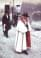
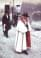
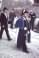
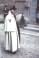
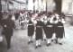
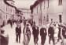
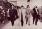
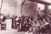
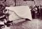
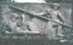

| |
Archivio Storico Fotografico dell'Associazione Culturale Zivido
  
 

  

 
 |
 |
|
In seguito alle sollecitazioni degli svizzeri residenti in Italia, si � costituito il Comitato "Pro Marignano" con lo scopo di collocare accanto alla chiesa di Zivido, dove riposano i caduti della "Battaglia dei Giganti" o di Marignano (13 e 14 settembre 1515), un monumento a ricordo. Il Comitato "Pro Marignano", al quale facevano parte illustri autorit� elvetiche, per la solerte opera dei signori Carlo Beeler, Albin Peter ed Emilio Steffen, ha realizzato il monumento conferendo l'incarico allo scultore svizzero Giuseppe Bisa stabilendo inoltre la cerimonia inaugurale per domenica 12 settembre 1965. Erano presenti: Philippe Zutter, Ambasciatore svizzero; Spasiano, Prefetto di Milano; il Generale Vedovato; Celi, Generale Comandante Divisione Carabinieri; autorit� cittadine locali; Georges Bonnant, Console Generale svizzero a Milano; Melfi, Questore di Milano; Peracchi, Presidente della Provincia di Milano; Montagna, Presidente Ente Manifestazioni Milanesi. Le parole del Marchese Don Annibale Brivio Sforza sono state di benvenuto per le autorit� e le persone presenti, hanno inoltre ricordato come il famoso fatto d'arme sia stato intimamente legato alle vicende della sua storica casata. Il discorso del dott. Peter Vogelsanger, cappellano militare di S. Gallo, ha rievocato il cappellano Ulrico Zuinglio che nel 1515 segu� per assisterli i suoi soldati glaronesi alla battaglia di Marignano e che tornato in patria, dolorosamente sconvolto, propugn� con tutte le sue forze una politica di pace.
Una delle sue prediche più belle ed appassionanti, che si conservano, � infatti quella nella quale ricorda la tragica Battaglia Dei Giganti. Il prof. Guido Calgari, titolare della cattedra di lingua e letteratura italiana nella famosa Scuola Politecnica Federale di Zurigo (cattedra che fu già di Francesco De Sanctis) nella sua allocuzione ha ricordato l'epica lotta e le conseguenze politiche per la Svizzera.
Zivido di San Giuliano Milanese (Milano) domenica 12 settembre 1965
Sul blocco di granito del monumento, raffigurante un armato che protegge l'amico morente, si legge "EX CLADE SALUS" (dalla disfatta alla salvezza) perch� la nazione svizzera considera la Battaglia dei Giganti e la conseguente ritirata come una rinascita: il passaggio da sogni di guerra e di potenza ad una saggia politica di pace e di neutralit�.
Ulteriori approfondimenti (documenti) >>
|
| |
|
|
|
Nel centro di Brunnen (Cantone di Svitto - Svizzera) si trova fra l'altro, sin dalla morte dello scultore Josef Bisa (1976), una fontana con un busto fatto dello stesso granito del monumento di Marignano, scolpito direttamente nella pietra. Un legame continuo tra Zivido e Brunnen. |